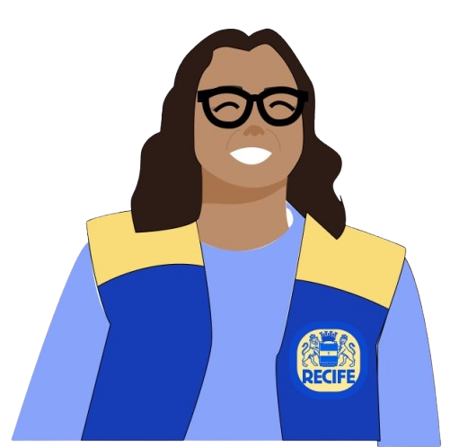
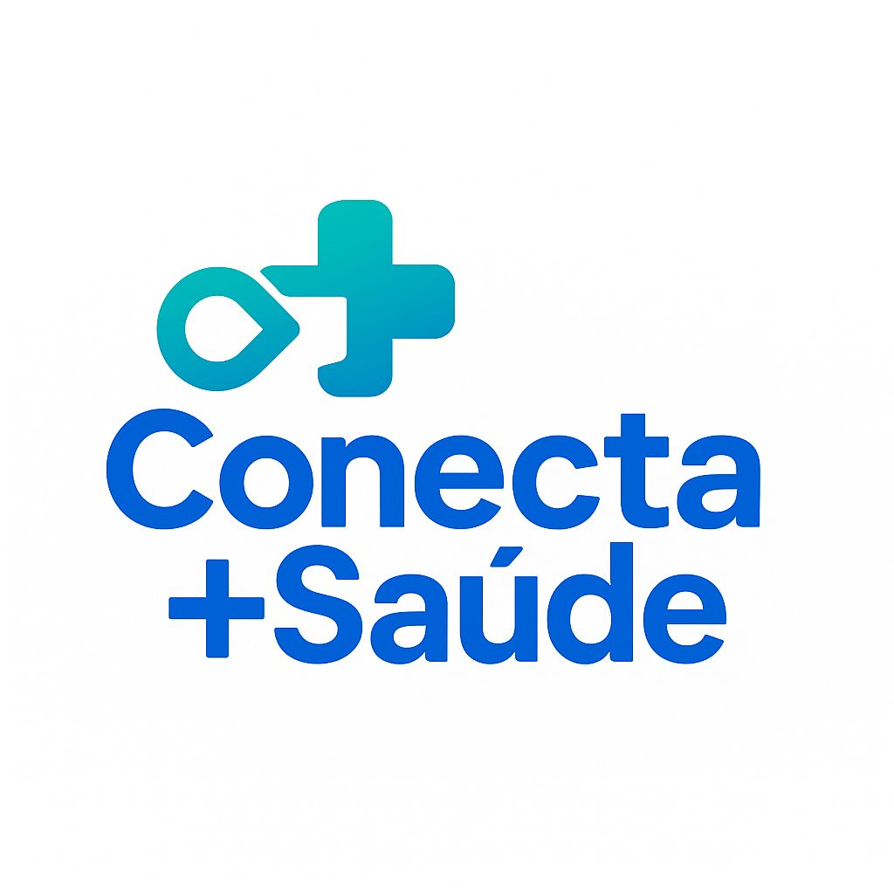

Olá, eu sou a Rosa! Estarei aqui para o que precisar. Se quiser tirar dúvidas sobre o funcionamento da
plataforma, ou alguma dúvida relacionada aos dados dos pacientes, fique à vontade e vamos em frente
melhorar o autocuidado.


ou
Notícias
Saiba Mais
Para ter acesso a plataforma do gestor no Conecta+Saúde, basta entrar com sua conta do Gov.BR ou do Conecta Recife. Caso tenha alguma dúvida sobre como criar uma dessas contas, acesse o tutorial no site oficial.
Todas as capacitações estarão disponíveis na aba CAPACITAÇÕES do painel. Basta conectar-se e você poderá seguir as instruções na tela para confirmar sua inscrição.
Basta conectar-se com uma das duas opções, acessar o painel na aba de MENSAGENS e inscrever-se em algum grupo de apoio. Caso já esteja inscrito, basta acessar o botão ENVIAR MENSAGENS e interagir no chat.
Basta conectar-se com uma das duas opções, acessar o painel na aba de ATENDIMENTOS e selecionar um dos pacientes listados. Você já estará conectado com o paciente para a teleconsulta.